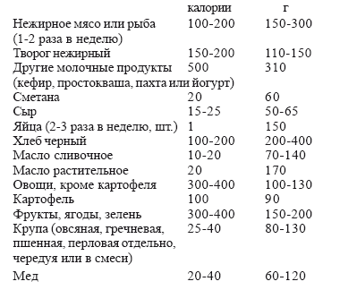

Будем жить долго

Как говорят данные специалистов-геронтологов, современный человек живет на 30–40 % меньше той жизни, что отведена ему природой.
Доказано, что человек при определенных условиях может прожить 120 лет.
Активное долголетие человека на сегодняшний день включает: питание натуральное, богатое витаминами и микроэлементами; нормальный отдых, закаливание и очищение организма; отказ от вредных привычек (курение, алкоголь). Если исключить одно из этих звеньев, значит, снизить эффективность остальных средств. Наиболее эффективна эта система, если она применяется с молодого возраста. Из проведенных научных исследований установлено, что и в более позднем возрасте применение некоторых перечисленных средств дает успешные результаты.
Основа долголетия – это нормально функционирующие железы внутренней секреции. С годами их жизнеспособность падает. Искусственные методы омоложения (пересадка желез, гормональные препараты и др.) – дают только временный эффект. Чтобы поддерживать железы в нормальном состоянии, йоги советуют сосредотачивать внимание на каждой железе, внушая себе, что она работает нормально, т. к. они чувствительны к самовнушению. Такой автотренинг нужен утром и вечером перед сном по нескольку минут.
Работа желез, а также и всего организма, зависит от питания. Питание должно быть полноценным, богатым витаминами. Изменения в питании и его рационализация способны добавить от 6 лет до нескольких десятков лет нормальной жизни.
Что для этого нужно? Ниже говорится только о тех особенностях питания, которые способствуют долголетию.
Доказано, что, когда человек достигает половой зрелости, гипофиз выделяет гормоны старения. Ограничение выделения этих гормонов должно, по логике вещей, привести к омоложению.
Опыт проводился на крысах. Сокращалась калорийность питания на 1/3 – продолжительность жизни крыс возрастала на 40 %.
Многие годы среднесуточные нормы питания в 25003500 калорий были завышены. Только рекомендации Г.С. Шаталовой, В.М. Дильмана и А.Н.Чупруна ближе к действительной норме. Калорийность суточного рациона при нормальном питании не должна превышать 2000 ккал. При длительной физической нагрузке молодым людям и людям среднего возраста необходимо прежде всего увеличить в суточном рационе количество биоэнергетических продуктов: семечек, орехов, зелени, меда, овощей и сырых фруктов, – а не калорийность.
Низкокалорийную пищу дополняет рацион с низким содержанием насыщенных жиров, холестерина, сахара и соли, с высоким содержанием растительных волокон, микроэлементов и витаминов. Такая пища продлевает продолжительность жизни, отрицательно влияя на развитие таких болезней старости, как инсульт, инфаркт, сахарный диабет, рак, гипертония.
В результате исследований рациона питания долгожителей из Абхазии, Болгарии и др. установлено, что в основном они употребляли молочно-растительную пищу. Абхазцы-долгожители не едят много мяса, только по праздникам режут барашка. В год на одного жителя у них потребляется 12 кг мяса, тогда как в России – 50 кг. Если свыше одного месяца употреблять белки животного происхождения более 2 г на 1 кг массы, то процесс старения идет быстрее и приводит к нарушению нервной системы, засорению организма шлаками.
Продукты белкового обмена – это яд для организма, т. к. они трудно выводятся из организма или нейтрализуются. Поэтому в некоторых странах преступников казнили так: кормили только мясом, и они умирали от интоксикации организма на 11-12-й день.
В результате исследований выявлено, что в мясе 35 % питательных веществ, а в рисе, пшенице – 80–95 %. Растительное питание помогает снизить потребности организма в белках.
Неверно и утверждение о том, что только в мясной пище есть все незаменимые аминокислоты. Аминокислоты содержатся в молоке, твороге, рыбе. Овсяная крупа по аминокислотному составу – особенно ценный продукт, наиболее близкий к мышечному белку. Повседневным блюдом долгожителей Абхазии является мамалыга – каша из кукурузной муки. Полноценный заменитель мяса в питании – гречневая крупа.
Фасоль, бобы, горох, орехи, листья малины в большом количестве содержат аминокислоты. В снытии тоже много белка. По качеству белок этого растения не уступает мясу, а витамина С в нем в 1,5 раза больше, чем в лимонах. В сушеном растении витамин С сохраняется. Сныть богата и микроэлементами, свежие и сущеные листья можно добавлять в салаты, в супы. У вегетарианцев в 80 раз больше возможностей стать долгожителями, чем у людей, которые едят смешанную пищу. А чтобы повысить силу и выносливость, необходимо перейти от смешанной пищи к вегетарианской. У лиц со средней физической тренированностью после перехода на вегетарианское питание физические качества повысились на 100 %, а у людей с высокой физической тренированностью – на 20–25 %. По данным Ирвинга Фишера только за счет снижения количества белка в пище у студентов выносливость стала на 50 % выше.
Тому, кто не может отказаться от употребления мяса, рекомендуем при варке мяса 1–2 раза слить бульон с целью удаления токсина и жира. Чтобы лучше усваивались белки и меньше накапливалось шлаков в организме, мясо нужно употреблять с овощами и зеленью. С хлебом – процесс пищеварения ухудшается и ослабевает организм. Мясо следует употреблять 1–2 раза в неделю и после приготовления съедать в течение получаса. Долго не хранить.
Когда из питания исключается мясо, взамен обязательно включаются молочно-растительные продукты плюс 2–3 яйца в неделю, немного семечек и орехов. Очень полезно кислое молоко, сыр в небольшом количестве или творог, пахта. Для взрослого человека не рекомендуется использовать ежедневно свежее молоко. А детям этот продукт необходим. Взрослому человеку необходимо молоко как естественное средство лечения. При кашле, хроническом катаре, мочеизнурении, при необходимости укрепления организма после тяжелых заболеваний поможет свежее коровье молоко, а свежее козье лечит одышку.
Биологические ценности многих продуктов сохраняются за счет сокращения времени их тепловой обработки. У крупы не должна быть разрушена оболочка зерна. Приготовленная пища не должна оставаться: приготовил – съел.
Антиоксиданты замедляют старение клеток, они содержатся в овощах и фруктах. Способствует омоложению талая вода в горных долинах.
Высока и биологическая активность быстро охлажденной после кипячения воды.
Старение организма и рост злокачественных опухолей происходит в результате изменения соотношения энергетических процессов в клетках – окислительного фосфорилирования и гликолиза (второе более свойственно пожилым). Чтобы усилить процессы окислительного фосфорилирования, нужно употреблять необходимое количество продуктов, которые насыщены жирными кислотами – растительное масло, семечки, орехи. Недостаток таких кислот в организме усиливает гликолиз.
Примерный набор продуктов для суточного рациона при переходе на вегетарианское питание (для лиц с избыточным весом рацион должен составлять 1200 калорий; для людей старшего возраста – 1700 калорий; для молодых и среднего возраста, занимающихся физической тренировкой, максимальное значение – 2200 калорий).

Иногда нужно еще добавлять орехи, семечки, морские продукты пророщенную пшеницу. Все это поможет обеспечить организм белками, углеводами, витаминами и микроэлементами. Последние очень важны для здоровья и долгой молодости. Добавление к пище пантотеновой кислоты (из группы витамина В), витамина В6 и нуклеиновой кислоты увеличивает продолжительность жизни животных на 46,6 %.
Поэтому рекомендуется употреблять только черный хлеб; в белом хлебе и в хлебе из цельной муки одинаковое количество углеводов, но хлеб из цельной муки по питательности ценится выше, в нем есть тиамин, рибофлавин, ниацин, витамин Е и другие вещества, которых нет в белом хлебе. В организме должно быть достаточное количество микроэлементов, прежде всего железа. Если в организме железа недостаточно, происходит быстрое старение, бледнеют губы и кожа, чувствуется упадок сил. Железо, как и кальций, не всегда усваиваются. Например, железо в органическом виде, а именно в таком виде оно содержится в мясе. В неорганическом виде железо усваивается хорошо. Источниками его являются зеленые овощи, ботва молодой репы, горчица, кресс-салат, печень, почки, яйца, листья одуванчика, сухофрукты. Железо следует потреблять в 2 раза больше суточной нормы, т. к. оно не усваивается в присутствии щавелевой и финиковой кислот. Для усвоения железа необходимо присутствие меди и витамина С.
Важный элемент бор, который сохраняет память и обеспечивает хорошую работу мозга. Его много в винограде, персиках, орехах, зелени.
Ведущую роль в работе всех желез организма играют минеральные вещества. Излишнее употребление слив и чернослива разрушает баланс минеральных веществ.
Фитин, который содержится в зерне, бобах, орехах, сером хлебе, а также щавелевая кислота, находящаяся в шпинате, щавеле, ревене отрицательно действуют на процессы усвоения минеральных веществ.
Поэтому нельзя сочетать эти продукты, например, с молоком или сыром. Если в организме дефицит кремния, то процесс старения ускоряется.
Кремний содержится в хлебе из муки грубого помола, кабачках, в луке, в яблоках. Недостаток кремния приводит к заболеванию артритом и атеросклерозом.
Вот примерный дневной рацион здорового питания. Завтрак (не ранее 10–11 часов, когда почувствуете голод): фрукты или отвар шиповника с медом или лимоном, или не завтракать; обед: салат из сырых овощей, каша из цельных зерен с маслом, 2–3 куска черного хлеба; или тушеные овощи (свекла, морковь, репа, тыква, капуста) и 2–3 кусочка черного хлеба; или печеный картофель, салат из сырых овощей и 2–3 куска черного хлеба; ужин: сыр или творог, яйца или орехи с салатом (капуста, свекла, зеленый лук, петрушка, сельдерей, кинза или любая другая зелень).
Воду, соки или травяной чай пейте через 2–3 часа после приема пищи и заканчивайте за 30 минут до следующего приема.
Враги долголетия и долгой молодости следующие продукты:
– хлебобулочные изделия из муки, крахмал, сахар;
– избыток соли, животных белков и жиров;
– любые жареные продукты – жарение уничтожает такие важнейшие для долголетия витамины, как А, Е, К и Р, одновременно увеличивая калорийность пищи;
– кофе (этот напиток лишен питательной ценности; танины, содержащиеся в нем, затрудняют усвоение белков, уменьшают содержание в организме ценных микроэлементов, прежде всего железа, кальция, а также витаминов группы В);
– продукты, содержащие пищевые жиры и нитраты (они являются сильными мутагенами; нейтрализовать их отрицательное действие помогают витамины С и Е).
Не способствует долголетию и употребление домашнего вина, присутствие в нем спирта вызывает нарушение обмена веществ. В.А. Иванченко проводил наблюдения в Молдавии и Закарпатье. Результат: из каждых 10 человек, повседневно принимавших виноградные вина, у 5 обнаружены признаки хронического гепатита, у 2 – цирроз печени.
В профилактике старения, как считает С.П. Семенов, особую роль играет организация питания. Он выделяет 9 принципов, которыми следует руководствоваться.
1. Принцип минимальной достаточности энергетических и строительных веществ в диете.
Этот принцип исключает переедание вообще. Известно, что высокая калорийность продуктов приводит к ожирению, а это является предпосылкой ускоренного развития генетической программы на всех этапах жизненного пути. Речь идет о белке, который, употребленный в большом количестве, превращается в жир. А это приводит к образованию так называемых биологически активных аминов. Они, в свою очередь, ускоряют обмен веществ, являясь шлаками. В общем, совершенно очевидно: большое количество белков ведет к старости. Хотя, с другой стороны, умеренное количество белка абсолютно необходимо для организма.
2. Принцип раздельного потребления высококалорийных продуктов растительного происхождения и белковых продуктов животного происхождения. Мы хотим сказать о превращении дневной диеты в вегетарианскую, а потребление белковых продуктов следует отнести на ужин за 34 часа до сна. Почему мы рекомендуем питаться днем вегетарианской пищей? Днем в организме происходят процессы, которые связаны с расходованием энергии. А во время сна, ночью, происходят восстановительные процессы, когда организм нуждается в первую очередь в строительных материалах. Поэтому дневной рацион должен быть достаточно калориен и витаминизирован. Таким требованиям отвечает вегетарианская диета. Еще раз хочется подчеркнуть тот факт, что ужинать следует за 3–4 часа до сна. Это связано с тем, что белковые продукты перевариваются в желудочно-кишечном тракте через 3–3,5 часа после приема пищи, и необходимо, чтобы продукты пищеварения направились на строительно-восстановительный процесс.
В качестве гарнира следует использовать только низкокалорийные продукты растительного происхождения, т. к. высококалорийный гарнир на ужин будет пополнять запасы жира, а это, как уже говорили, приводит к ожирению. Низкокалорийный гарнир должен способствовать перевариванию животного белкового продукта, действуя сокогонно; он должен препятствовать развитию вредных микробов; должен раздражать кишечник, т. к. белковые продукты будут усваиваться; должен препятствовать ускоренному всасыванию экстрактивных веществ; не должен мешать нормальному перевариванию основного продукта.
Гарнир должен состоять из сырых овощей с кислым соусом, свежих листьев зелени, кислых фруктов и небольшого количества пористого хлеба. Нельзя использовать в качестве гарнира макароны, каши, хлеб, т. к. эти продукты еще сильнее затрудняют переваривание белковых продуктов. Белковые продукты животного происхождения и растительного перевариваются по-разному. Если они соединены, они мешают друг другу в переваривании, в результате чего недопереваренные продукты попадают в толстый кишечник и образуют вредоносные микробы, которые затрудняют работу печени и действуют дурманяще на мозг.
Из всего вышесказанного сделаем вывод: ни в коем случае нельзя сочетать в одном приеме белок содержащие продукты животного происхождения и высококалорийные растительные. Если же сложно преодолеть свои привычки, старайтесь хотя бы уменьшить объем смешанной пищи. В таком случае питаться следует не 3, а 4–6 раз. Впрочем, питаться чаще и брать на один прием совсем немного пищи в любом случае целесообразно.
3. Ограничение использования концентратов, экстрактов и использование для замедления их усвоения пищевых абсорбентов.
Речь пойдет о вредности кулинарной обработки экстрактивных веществ.
Известно, что скорость обезвреживания в печени продуктов пищеварения имеет большое значение. Если на печень приходится большое количество веществ, подлежащих обезвреживанию, то она не успевает выполнять свои функции. Тогда часть этих веществ попадает в основной кровоток и вредно действует на ткани, органы, на мозг.
Это происходит именно тогда, когда человек употребляет концентраты или экстракты.
Если, например, человек съест кусок мяса, он будет постепенно перевариваться и печень успеет обезвредить все образующиеся продукты переваривания. А если же из этого куска мяса сварить бульон, то в нем окажется экстрактивные вещества, что приведет к образованию большого количества шлаков, которые будут быстро усвоены, т. к. времени на переваривание в это случае не надо.
Что следует исключить из рациона питания вообще? Первые бульоны как основы супов. Каково же отличие первого бульона от второго?
Он отличается тем, что в нем содержится большая часть экстрактивных веществ. Чтобы приготовить второй бульон, надо поварить исходный продукт 10–15 минут, после чего отвар слить, залить новую порцию жидкости и варить до готовности. Основу второго бульона составляют продукты гидролиза активного белка. И такой бульон полезен особенно тогда, когда у человека по каким-либо причинам снижены пищеварительные возможности.
4. Целесообразна ориентация на трудно перевариваемые продукты питания с достаточным количеством балластных веществ.
Этот принцип касается дневной вегетарианской диеты. Известно, что медленное усвоение организмом пищи считается более полноценным.
Балластные вещества задерживают на себе те шлаки, которые организм выделяет в просвет кишечника. Поэтому полезно есть фрукты, листовую зелень, крупяные изделия, если их не дробить и не варить жидкую кашу, некоторые овощи. Противовесом этим продуктам выступают животные продукты, хлеб, жиры, крахмалистые овощи.
5. Целесообразно использование комплексных поливитаминных препаратов.
Всем известно, какое влияние оказывают поливитамины на организм человека. Для профилактики удовлетворительным поливитаминным препаратом является «Декамевит», который следует применять так: одно драже в день во время завтрака, не более. Злоупотребление витаминами может привести к гипервитаминозу. А это так же вредно, как гиповитаминоз.
6. В диете взрослого человека эрготропные продукты должны преобладать над трофотропными.
Этот принцип следует учитывать во избежание ускоренного старения. Трофотропными продуктами являются овощи, морская капуста, пиво, квас и другие продукты дрожжевого брожения, а фрукты и крупяные изделия – это эрготропные продукты.
Продукты с трофотропными свойствами подходят на гарнир, т. к. усиливают усвоение белков в организме.
Последний прием пищи проводим незадолго до сна (но это не ужин).
При этом можно выпить стакан кефира, съесть 1–2 яблока. Кисло-молочные продукты оказывают послабляющее действие и благоприятствуют усвоению белкового ужина. Яблоки же – превосходное очистительное средство, содержащее большое количество пектина, который считается лучшим абсорбентом.
7. Необходимо отказывать себе в продуктах, которые вызывают какую-либо аллергическую реакцию.
Об этом уже было сказано выше. Тем более, что на тему аллергенов имеется масса различной литературы.
8. Следует избегать «отеков» и обезвоживания. Здесь будем говорить о том, какой вред организму наносит потребление большого количества жидкости. Чтобы не произошло пресыщение организма водой, надо выпивать не более 200–250 миллилитров.
Только в исключительных случаях, когда произошла значительная потеря жидкости, можно увеличить объем ее потребления. Причем принимать ее надо следующим образом: вначале выпить 200–250 мл жидкости, а затем, если это все же необходимо, – еще, минут через 25–30. Для того, чтобы все-таки принимать умеренное количество жидкости, можете воспользоваться следующим советом: избавьте себя от тарелок и чашек большого объема, чем указано выше. Что же считается жидкостью? Это и питьевая вода, и чай, и кофе, и напитки, и супы…
Какова же норма потребления жидкости? Здесь надо учитывать возраст человека, вес. Например, для человека средних лет и со средним весом объем жидкости составляет 1,5–2,5 литра. Ну, а если произошла потеря жидкости, объем ее потребления увеличивается.
Чтобы избежать обезвоживания, рекомендуется потреблять жидкость часто, но небольшими порциями. И следует очень осторожно относиться к продуктам с выраженным мочегонным действием. Это – чай, кофе, петрушка…
И еще один совет. Идя в баню, берите необходимое количество жидкости, чтобы компенсировать ее потерю.
Что же касается равномерности потребления жидкости, то она совершенно различна. Так, утром принимается жидкости больше всего, к вечеру же объем ее постепенно уменьшается.
9. Следует избегать пересолов.
Для того, чтобы избежать пересолов, пищу следует готовить без соли, а подсаливать ее уже в готовом виде. И это понятно. Ведь если мы солим пищу в процессе кулинарной обработки, то она просаливается насквозь, и расход соли весьма велик. А когда пища подсаливается в готовом виде, то соляной раствор только обволакивает поверхность отдельных кусочков, сохраняя при этом вкусовые свойства и значительно уменьшая расход соли.
Надо ли отказаться от соли вообще? Нет! Особенно если вы взрослый человек и всю жизнь подсаливали пищу. Недостаток соли плохо сказывается на состоянии всех органов. Признаком этого может быть низкое артериальное давление, слабость, быстрая утомляемость.
Поэтому, когда появляются такие симптомы, пищу следует подсаливать немного больше.
Но ни в коем случае нельзя употреблять соленую пищу на ночь!
В заключение следует подчеркнуть, что все приведенные выше принципы следует понимать индивидуально для каждого человека и, конечно же, учитывать его возраст.
РЕЦЕПТЫ НАТУРИСТОВ
Блюда из сырых растительных продуктов. Салаты.
Салат из краснокочанной капусты
1 кг краснокочанной капусты, сок 2 лимонов, оливковое масло.
Очищенную капусту мелко нашинкуйте, положите в стеклянную посуду, посолите и оставьте на 20–30 минут. Затем сбрызните ее лимонным соком и оливковым маслом.
Салат со сладким перцем
2 шт. сладкого перца, 2 помидора, 1 огурец, зеленый или репчатый лук, зелень, 2 ст. ложки лимонного сока.
Перец очистите, нарежьте, смешайте с нарезанными помидорами и огурцом, добавьте зеленого или репчатого лука, нарезанного колечками, выложите овощи на тарелку, полейте лимонным соком.
Салат из помидоров и огурцов 4 помидора, 1 луковица, 1 огурец, 1 ст. ложка растительного масла.
Помидоры, луковицу и огурец нарежьте колечками. Сок от помидоров соберите и смешайте с растительным маслом. Разложите кусочки овощей на мелкой тарелке, полейте соусом.
Салат морковный сладкий
2 моркови, 2 яблока, 1/3 лимона, 1–2 ст. ложки меда. Морковь, яблоки и лимон натрите на терке, смешайте лимон с медом. Все перемешайте.
Салат из петрушки и зеленого лука
4– 5 стеблей зеленого лука, 2 пучка петрушки, соль, 1 лимон, 2-3ст. ложки растительного масла.
Зеленый лук и петрушку мелко нарежьте, посолите по вкусу и выдержите 20 мин. Добавьте очищенный от кожуры лимон, нарезанный маленькими кубиками, и заправьте растительным маслом. Салат хорошо размешайте.
Салат из листьев салата по-гречески
5– 6 стеблей лука-порея, 1/2 стакана томатного сока, соль, лимонный сок, 15 маслин, 3–4 ст. ложки растительного масла, черный перец по вкусу, петрушка.
Лук-порей мелко нарежьте и залейте томатным и лимонным соками, посолите. Добавьте маслины, удалив из них косточки, растительное масло, черный перец по вкусу. Салат размешайте и сложите в салатницу, посыпьте сверху мелко нарезанной петрушкой.
Салат из свежих красных помидоров по-гречески 2 крупных помидора, 1–2 ст. ложки растительного масла, петрушка, 5–6 маслин без косточек, лимонный сок.
Помидоры вымойте и очистите. Более мелкий помидор натрите на терке, посолите, размешайте, добавьте растительное масло. Другой помидор нарежьте кружочками. В салатницу порежьте немного петрушки, сверху уложите кружочки помидора и залейте натертым помидором.
Перед подачей на стол посыпьте мелко нарезанной петрушкой и украсьте маслинами. По желанию сбрызните лимонным соком.
Салат с толченой капустой
Соотношение продуктов – по вкусу.
Мелко нашинкованную капусту растолките деревянной толкучкой, добавьте растертый чеснок, укроп, растительное масло, лимонный сок или кислое яблоко.
Салат с сырым картофелем
1 картофелина, 500 г капусты, 1 небольшая свекла, 1–2 помидора, лук, 1–2 ст. ложки растительного масла.
Картофель, капусту и свеклу натрите на крупной терке, прибавьте в эти овощи помидоры, лук, растительное масло и размешайте.
Салат кислый
1 морковь, 1 редька, 2 кислых яблока, зелень, 1–2 ст. ложки растительного масла.
Морковь, редьку и кислые яблоки натрите, размешайте с мелко нарезанной зеленью, заправьте растительным маслом.
Салат из тыквы и свеклы
300 г тыквы, 1 свекла, 50 г сушеного чернослива, корица, растительное масло.
Тыкву и свеклу натрите, добавьте сушеный чернослив без косточек, корицу и растительное масло. Салат со шпинатом
1 пучок шпината, 1 пучок петрушки, 2–3 зубчика чеснока, 3 помидора, 1 луковица, 1–2 ст. ложки растительного масла или лимонного сока.
Шпинат, петрушку, лук, помидоры, чеснок нашинкуйте, добавьте растительное масло или лимонный сок и хорошо перемешайте.
Лиственный зеленый салат
1 пучок салата, 1–2 огурца, укроп, лимонный или гранатовый сок, мед.
Огурцы, листья зеленого салата, укроп мелко нарежьте, добавьте лимонный или гранатовый сок, залейте подслащенной медом водой.
Салат из морковки с кабачками
Соотношение продуктов – по вкусу.
Натрите на терке морковь и кабачки в равных количествах, добавьте петрушку, укроп, растительное масло и лимонный сок.
Салат с редькой и клюквенным соком
1 редька, 2 ст. ложки клюквенного сока, 1 ст. ложка растительного масла, зелень.
Редьку натрите, добавьте клюквенный сок, растительное масло, зелень.
БЛЮДА ИЗ ЗЕРНОВЫХ И БОБОВЫХ
«Пирог» из проросшей пшеницы
1 стакан проросшей пшеницы, 100 г орехов, мед, 1/2 стакана гречневой муки, кислые яблоки или сухофрукты.
Проросшую пшеницу (росток не должен превышать 1–2 мм) и орехи пропустите через мясорубку, добавьте мед по вкусу (мед можно заменить финиками или изюмом). Полученную массу замесите гречневой мукой, положите на тарелку и покройте слоем тертых кислых яблок или пропущенных через мясорубку сухофруктов.
Гречневая мука с грецкими орехами
1 стакан гречки, 100 г грецких орехов, лук, чеснок.
Гречневую муку разведите водой (желательно дистиллированной), добавьте тертые грецкие орехи, мелко нарезанные лук и чеснок. Можно посыпать кинзой или петрушкой, а орехи заменить растительным маслом.
Овсяные хлопья с острой приправой
1 стакан геркулеса, 1/2 стакана чечевицы, 1 ст. ложка растительного масла, лук, лимонный сок.
Из замоченных хлопьев геркулеса отцедите жидкость, добавьте замоченную на сутки чечевицу, растительное масло, нарезанный лук и лимонный сок.
Сырой чечевичный «суп» с соком шиповника 100 г шиповника, 1/2 стакана чечевицы, лук, зелень, 1 ст. ложка растительного масла.
Из растолченного и размоченного шиповника отцедите сок, добавьте заранее замоченную чечевицу и мелко нарезанный лук и любую зелень. Можно влить растительное масло.
Окрошка с соком шиповника
Соотношение продуктов – по вкусу.
В сок шиповника мелко накрошите лук, редьку, капусту, морковь, огурец, петрушку, укроп. Получится подобие окрошки.
Овсяные хлопья с медом, курагой и яблоками 1 стакан геркулеса, мед, 100 г орехов, 50 г кураги, 1 яблоко.
Геркулес залейте разбавленным медом, добавьте мелко тертые орехи, размоченную курагу и тертое яблоко.
Сырая гречневая каша
1 стакан гречневой крупы, лук, зелень, растительное масло.
Гречневую муку заалейте стаканом воды и оставьте на 5–6 часов, чтобы крупа впитала воду и разбухла. Затем добавьте мелко нарезанный лук, зелень и растительное масло. Летом добавляйте помидоры.
Сырой компот из сухофруктов
1 стакан сушеных фруктов, мед.
Сушеные фрукты помойте, залейте водой (желательно, дистиллированной) и оставьте на несколько часов. Если сухофрукты несладкие, добавьте мед.
БЛЮДА ИЗ ВАРЕНЫХ И ТУШЕНЫХ РАСТИТЕЛЬНЫХ ПРОДУКТОВ
Салат из цветной капусты
300 г цветной капусты, 3 моркови, 1 огурец, 1 луковица, 2 ст. ложки растительного масла, 2 ст. ложки лимонного сока, хрен или редька.
Цветную капусту, морковь отварите, нарежьте, добавьте огурец и луковицу, смешайте, залейте соусом из растительного масла, лимонного сока, тертого хрена или редьки.
Помидоры, фаршированные гречневой кашей
12 помидоров средней величины, 150 г гречневой крупы, желтки, 50 г масла.
У помидоров срежьте верхушки и удалите ложкой мякоть с семенами.
Сварите гречневую кашу и наполните ею помидоры до половины. В каждый помидор введите сырой желток. Положите в огнеупорную посуду, полейте растопленным маслом и запеките в горячей духовке.
Кабачки фаршированные
1 кг кабачков, соль. Для фарша – овощи, томат, масло.
Кабачки очистите от кожицы, разрежьте поперек на кусочки толщиной 4–5 см, удалите из них семена с частью мякоти и отварите до полуготовности в подсоленной воде. Затем положите кабачки на смазанную маслом сковородку или противень, заполнив отверстия фаршем так, чтобы он выступал горкой, сбрызните маслом и запеките в духовке.
Фарш: овощи нарежьте соломкой, слегка обжарьте и потушите.
Репа фаршированная
3-4 репы, 1–2 ст. ложки сухарей, зелень. Для начинки – мякоть репы, 2–3 головки лука, 1/4 стакана риса.
Репу сварите до готовности, удалите сердцевину, заполните углубление начинкой, полейте растительным маслом, посыпьте сухарями и запеките в духовке. Перед подачей посыпьте зеленью.
Начинка: нарубите очищенную репу, добавьте обжаренный лук. Отварите рис, откиньте на дуршлаг, промойте горячей водой, затем смешайте с репой и жареным луком.
Тушеные баклажаны
1-2 баклажана, 1 луковица, 2–3 помидора, 2 моркови, немного черного перца или сладкий перец, 3–4 ст. ложки растительного масла.
Баклажаны нарежьте кубиками, добавьте нарезанную луковицу, помидоры, морковь, немного перца. Тушите в небольшом количестве воды.
Когда овощи станут мягкими влейте растительное масло и тушите еще 5 минут.
Суфле из цветной капусты
1/2 качана цветной капусты, 2 стакана молока, 1 ст. ложка сливочного масла, 4 ст. ложки манной крупы, яйцо, сухари, еще 1 ст. ложка сливочного масла.
Цветную капусту тушите в молоке с добавлением сливочного масла.
Пропустите капусту через мясорубку, смешайте с манной крупой, яйцом, выложите в форму, смазанную маслом и посыпанную сухарями, облейте растопленным маслом, обсыпьте сухарями и запекайте в духовке 10 мин.
Шницель из капусты
200-300 г капусты, яйцо, сухари, 2 ст. ложки растительного масла.
Отварите листья капусты, дайте остыть, слегка отожмите, разрежьте на две части, обмакните во взбитое яйцо, затем обсыпьте сухарями или отрубями. Обжарьте.
Капустные тефтели
500 г капусты, 1 луковица, 1 сырое яйцо, сухари, сметана, зелень.
Капусту отварите, пропустите через мясорубку, добавьте поджаренный мелко нарезанный лук, сырое яйцо и белые толченые или тертые сухари. Всю массу перемешайте, слепите из нее тефтели и варите их на пару или в подсоленной воде. На стол подавайте со сметаной и зеленью.
Капуста с яблоками
1/2 качана капусты, 1–2 луковицы, 2–3 яблока, 1 ч. ложка уксуса, 2–3 ст. ложки масла.
Капусту тонко нарежьте, натрите на крупной терке и отварите до полуготовности. Слейте воду, выложите в гусятницу капусту, пассированный в сливочном масле лук, мелко нарезанные очищенные яблоки, добавьте уксус, масло, если нужно, немного воды и тушите в духовке до готовности.
Каша-мешанка
1 стакан смеси круп (пшенная и ячневая, кукурузная или рисовая и пшеничная, кукурузная и ячневая), 1 стакан различных овощей, соль.
Одна из круп должна быть цельная, а другая – дробленая. Овощи натрите на крупной терке. На 1 стакан смеси круп возьмите 1 стакан овощей. Варите до готовности.
Тыква с лимоном
400 г тыквы, 1 лимон, 2 ст. ложки меда, 2–3 ст. ложки сметаны.
Тыкву очистите от кожуры, испеките и протрите через сито или пропустите через мясорубку. Лимон натрите на терке, смешайте с тыквой, добавьте мед и тушите 15 минут. Остудите и подайте со сметаной.
60 ЦЕЛЕБНЫХ СОКОВ
Соки пить полезно!
Эта прописная истина известна каждому. Соки сохраняют все питательные вещества, имеющиеся в свежих и здоровых плодах, ягодах и овощах, они легко усваиваются организмом. Целебная сила соков была известна еще в глубокой древности и находит широкое применение как в народной медицине, так и в лечебных целях. Комплекс содержащихся в них полезных веществ делает их великолепным диетически питанием, помогает восстанавливать силы и здоровье.
Лучшие соки – это свежеприготовленные «мутные», т. е. содержащие большое количество исходного сырья, соки. (Соки фильтруют только при некоторых нарушениях работы желудка и кишечника, а также при некоторых респираторных заболеваниях.)
В первом разделе рассказывается о фруктовых и ягодных соках, которые можно получить из плодов и ягод, легко доступных практически каждому и произрастающих на территории бывшего СССР. В этот список не вошли несомненно полезные, но экзотические плоды, такие как ананас, фейхоя и т. п. Зато включены арбуз и дыня, хотя они относятся к овощам (традиционно арбуз и дыня воспринимаются как ягода, да и плоды их называют ложной ягодой), а также береза, которой нигде не находилось места.
Свежеприготовленные соки не всегда доступны. Поэтому большой популярностью пользуются консервированные соки. Приготовленные по апробированной технологии, они почти не теряют своих целебных свойств. Поэтому там, где это уместно, приведены способы приготовления соков в домашних условиях. Для приготовления соков пользуются эмалированной посудой или посудой из нержавеющей стали, деревянными пестиками или толкушками и различными соковыжималками и прессами. Для заготовки соков с успехом применяют соковарки.
Соки консервируют тремя способами: горячим разливом, пастеризацией и стерилизацией.
При горячем разливе свежеотжатый сок нагревают до температуры 70–75 градусов и фильтруют через прокипяченную фланель или марлю, сложенную в несколько слоев. После этого нагревают до кипения, кипятят 2–3 минуты, разливают в стерилизованные стеклянные банки или бутылки, герметично укупоривают, банки переворачивают вверх дном, а бутылки кладут на бок для дополнительной стерилизации верхней части и проверки качества укупорки.
При пастеризации свежеотжатый сок подогревают до температуры 80 градусов и фильтруют горячим. Затем сок вновь подогревают до 80–90 градусов, разливают в подготовленную посуду и пастеризуют при температуре 85 градусов.
При стерилизации свежеотжатый сок нагревают до температуры 80 градусов, фильтруют, доводят до кипения, разливают в подготовленную посуду и выдерживают в кипящей воде: пол-литровые банки – 10 минут, литровые – 12–15 минут, двухлитровые – 20 и трехлитровые 25–30 минут, считая с момента закипания воды. Затем банки герметично укупоривают.
Законсервированный сок оставляют на 8-10 дней при комнатной температуре, и если он за это время не начнет портиться, ставят на хранение в сухое прохладное место.
Необходимо знать, что не все виды плодов и ягод одинаково хорошо отдают сок. Для лучшего сокоотделения применяют бланширование, т. е. погружение плодов на несколько минут в кастрюлю с кипящей водой или держат в решете над паром.
Кроме натуральных соков готовят купажированные (смешанные) соки.
Смешивая соки различных фруктов и ягод можно значительно улучшить их вкусовые качества и пищевую ценность. Например, яблочный сок хорошо сочетается с соками большинства плодов и ягод. Часто купажируют и малиновый сок, а также сок красной смородины.
В лечебную практику все активнее входят овощные соки (а в народной медицине они используются с незапамятных времен). Второй раздел посвящен овощным сокам и их свойствам. При этом обращено внимание на доступность плодов каждому человеку.
О чем следует помнить тем, кто собирается лечиться соками? Действие многих из них на организм человека еще не до конца изучено.
Поэтому нельзя заниматься самолечением. Во всех случаях необходимо со своим лечащим врачом и лечение проводить только под контролем специалистов.
1. СОКИ ИЗ ПЛОДОВ И ЯГОД
Абрикос
В плодах абрикоса содержатся сахара (до 20 %); органические кислоты – яблочная, лимонная, салициловая, винная; витамины В1, В2, В15, С, каротин, фолиевая кислота; пектиновые вещества; крахмал; ферменты; минеральные соли калия, кальция, железа, цинка, кобальта, меди, йода.
Свежий абрикосовый сок назначают при ишемический болезни сердца, аритмиях, сердечно-сосудистой недостаточности, гипертонической болезни, малокровии, гипокалиемии.
Сок абрикосовый с мякотью
Зрелые плоды перебрать, промыть, пробланшировать 10 минут в кипящей воде для размягчения (следить, чтобы не разварились), удалить косточки и протереть сквозь сито. На бланшировочной воде приготовить сахарный сироп и смешать с протертой массой абрикосов. Сок консервировать способом горячего разлива.
Рецептура
На 1 килограмм абрикосового пюре 0,5 л 15 % сахарного сиропа.
Айва
В плодах айвы содержатся сахара, в основном фруктоза (5-12 %); органические кислоты – яблочная, винная, лимонная (до 1 %); витамины С (до 46 мг %), РР, Р, Е, группы В; каротин; фолиевая кислота; катехины и лейкоантоцианы; пектиновые вещества; эфирное масло; минеральные соли железа, марганца, меди, кобальта, калия, а также кальций, магний, фосфор и дубильные вещества.
Сок айвы в сочетании с медом и уксусом возбуждает аппетит. Отличное поливитаминное средство.
Сок из айвы
Айву, достигшую после лежки потребительской зрелости, промыть, очистить от сердцевины и поврежденных мест, измельчить на шинковке или мясорубке с крупными отверстиями в решетке. Из полученной массы отжать сок, нагреть его до 80 градусов, профильтровать через фланель или марлю, сложенную в 4 слоя, добавить немного сахара и законсервировать.
Актинидия
Плоды актинидии содержат в 10–15 раз больше аскорбиновой кислоты, чем лимоны, апельсины, черная смородина и другие известные витаминные растения. В ней содержатся различные сахара, органические кислоты, дубильные и красящие вещества, минеральные соли и ряд других полезных для человека соединений.
Сок актинидии применяется как противоцинготное средство, а также при выведении глистов, туберкулезе легких, маточных кровотечениях. Его рекомендуют при ослаблении и истощении организма в результате перенесенных инекционных заболеваний, при физическом и умственном утомлении, некоторых острых и хронических болезнях желудка и кишечника.
Так как при хранении плодов актинидии содержание витамина С в них быстро снижается, принято заготавливать консервированный сок. Такой сок позволяет сохранить активность витамина С в течение многих месяцев.
Сок из актинидии
Ягоды актинидии собрать выборочно, так как они созревают не равномерно. Подготовленные ягоды отжимают холодным способом – при помощи ручной соковыжималки или пресса. Отжатый сок нагревают в эмалированной посуде до 80 градусов, разливают в стерилизованные банки или бутылки и герметично укупоривают прокипяченные крышками или пробками.
Алыча
Плоды содержат до 10 % сахара; до 4 % органических кислот (в основном яблочная и лимонная); витамин С; каротин; пектиновые вещества.
Сок алычи обладает слабым послабляющим действием, его рекомендуется пить при запорах.
Сок из алычи
Подготовленные ягоды укладывают в паровую соковарку, примерно через 40–45 минут начинается сокоотделение. Горячий сок, температура которого около 75 градусов, сливают через отводную трубку в чистые бутылки или банки, которые должны быть предварительно пастеризованы и нагреты, и герметично укупоривают. В сок можно добавить сахар или сахарный сироп по вкусу.
Апельсин
Плоды апельсина содержат сахара – фруктозу, глюкозу, сахарозу; органические кислоты, в основном лимонную (до 2 %); витамины В1, В2, РР, С, каротин; пектиновые вещества; липотропное вещество инозит; фитонциды; минеральные соли калия, кальция, железа и фосфора.
Апельсиновый сок назначается больным с ахилическими гастритами, хроническими запорами, метеоризме, гипо– и авитаминозах, гипертонической болезни, атеросклерозе, подагре и болезнях печени. Как противовоспалительное и бактерицидное средство апельсиновый сок применяют в лечении инициированных ран и язв.
При хронических запорах рекомендуется выпивать апельсиновый сок два раза в день – утром натощак и вечером перед сном.
Сок из апельсина
Неочищенный апельсин моют разрезают пополам (поперек), половину накладывают на конус конусной соковыжималки для цитрусовых и поворачивают (нажимая) в обе стороны до тех пор, пока не будет выжат весь сок. Сок собирают в подставленную емкость. Апельсиновый сок пьют свежим.
Арбуз
Плод арбуза содержит фруктозу, сахарозу, глюкозу (612 %); аминокислоты; витамины В1, В2, РР, С, каротин и каротиноиды; фолиевую кислоту; пектиновые вещества; минеральные соли калия, железа, кальция, магния, кобальта; клетчатку.
Сок арбуза является ценным диетическим продуктом. Он усиливает диурез с выделением избытка солей, регулирует кислотнощелочное равновесие, способствует нормализации работы кишечника, выделению из организма холестерина, стимуляции процесса кроветворения.
Арбузный сок назначают при заболеваниях печени, эндо– и экзогенных интоксикациях, лихорадке, мочекислом диатезе, болезнях печени и калькулезном холецистите, ожирении, малокровии, атеросклерозе, гипертонической болезни, подагре, артритах, сахарном диабете.
При малокровии и для стимуляции кроветворения рекомендуется пить арбузный сок без ограничения.
Сок из арбуза
Мякоть арбуза очищают от косточек и отжимают при помощи соковыжималки или пресса. Пьют свежий.
Арония (черноплодная рябина)
Плоды аронии имеют приятный кисловато-сладкий вкус за счет наличия в них сахара и органических кислот. В них имеются витамины В1, В2, С, РР, каротин, фолиевая кислота, минеральные вещества, а также различные биофлавоноиды – вещества с полифенольным типом строения, обладающие активностью витамина Р. Витамин Р активизирует деятельность щитовидной железы, надпочечников и других желез внутренней секреции, стимулирует процессы регенерации мышечной и костной ткани, делает стенки кровеносных капилляров более эластичными, снимает умственную и физическую усталость, оказывает защитное действие при бактериальных и вирусных заболеваниях и лучевых поражениях, повышает тонус организма.
Плоды аронии возбуждают аппетит, увеличивают кислотность и переваривающую способность желудочного сока. Сок черноплодной рябины полезен людям, страдающим гастритом с пониженной кислотностью, а также больным гипертонической болезнью и атеросклерозом.
Ягоды черноплодной рябины нельзя употреблять больным, страдающим язвенной болезнью.
Сок из аронии
Ягоды аронии обладают высокой способностью сокоотдачи: до 75 % от веса переработанных плодов.
Для получения сока ягоды перебирают, очищают от веточек, удаляют негодные, моют холодной водой и откидывают на решето. Когда вода стечет и ягоды обсохнут, их разминают деревянным пестиком или пропускают через мясорубку или соковыжималку типа мясорубки и отжимают при помощи пресса или ручной соковыжималки.
Сок из черноплодной рябины можно принимать как свежим, так и консервированным.
Сок натуральный. Измельченные плоды аронии прогреть до 60 градусов в течение 10 минут. Перед прогреванием на 1 кг мезги добавить полстакана воды.
Мезгу отжать. Оставшийся отжим поместить в эмалированную кастрюлю, залить прокипяченной теплой водой (1 стакан воды на 1 кг выжимок), дать постоять 3–4 часа, периодически помешивая, и снова отжать.
Сок первого и второго отжимов смешать, профильтровать, подогреть до 80–85 градусов, разлить в стерилизованные банки или бутылки и пастеризовать при 85 градусах: пол-литровые банки – 10, литровые – 1015 и трехлитровые – 15–20 минут.
Сок подслащенный. К приготовленному выше описанным способом соку добавить сахарный сироп из расчета 400 г сахара на 1 л ока (сахарный сироп приготовляется на соке второго отжима). Полученный раствор подогревают до 80–85 градусов, процеживают и разливают в горячие простерилизованные банки или бутылки. Пастеризовать как натуральный сок.
Сок с мякотью. Ягоды черноплодной рябины измельчить, прогреть при 80 градусах в течение 15 минут и протереть сквозь сито. Полученную массу смешать с горячим сахарным сиропом, подогреть до 80 градусов и сразу разливать в горячие простерилизованные банки или бутылки. Стерилизовать в кипящей воде: пол-литровые бутылки – 10, пол-литровые банки – 10, литровые – 25, трехлитровые – 50 минут.
На 1 кг протертой аронии требуется 1 л 35 %-ного сахарного сиропа.
Барбарис
Ягоды барбариса содержат до 7 % сахара (фруктоза и глюкоза), до 7,5 % органических кислот (яблочная, винно-каменная, лимонная), витамин С, флавоноиды, а также пектиновые, дубильные и красящие вещества и некоторое количество алкалоидов, главным из которых является берберин. С ним связывают стимулирующее действие на мускулатуру матки, он вызывает понижение кровяного давления, усиливает отделение желчи, увеличивает амплитуду сердечных сокращений.
Как народное средство применяется в качестве желчегонного, мочегонного и слабительного средства, при цинге, потере аппетита, а также при маточных кровотечениях
Сок из барбариса
Сок натуральный. Спелые плоды барбариса промыть, отделить от кистей, отварить в воде (на 1 кг плодов 0,5 л воды). Варить 15 минут и после этого отжать под прессом. Полученный сок разлить в простерилизованные банки или бутылки и простерилизовать в течение 15 минут.
Сок подслащенный. В приготовленный вышеописанным способом барбарисовый сок добавить 50 %-ный сахарный сироп из расчета 1 л сиропа на 1 л сока.
Береза
Березовый сок является оздоровительным поливитаминным напитком, обладающим ценными профилактическими и лечебными свойствами. В нем содержится 11,2 % сахаров, в том числе глюкоза, сахароза и фруктоза; витамины С, В1, В6, РР, Н; макроэлеенты калий, натрий, кальций, магний; микроэлементы медь, марганец, железо, алюминий, кремний, никель, титан и др.
Березовый сок обладает кроветворным и регенерирующим действием, стимулирует обмен веществ в организме. В народной медицине его пьют при суставных заболеваниях, подагре, экземе, лишаях. Он находит применение при некоторых заболеваниях легких, бронхитах и туберкулезе как общеукрепляющее средство. Соком березы омывают лицо при пигментных пятнах и угрях.
Здоровым людям свежий сок можно пить неограниченно вместо воды, чая и т. п. в течение одного-двух месяцев. Березовый сок
Свежий березовый сок заготавливается весной с началом сокодвижения в деревьях. Прекрасно хранится в холодильнике или на леднике.
Березовый сок с сахаром. Сок нагревают в эмалированной посуде до температуры 80–85 градусов, добавляют 5-10 %-ный сахарный сироп и разливают в стерилизованные банки или бутылки (можно добавить лимонной кислоты). Сок стерилизуют в кипящей воде: пол-литровые банки – 10, литровые – 15, трехлитровые – 20–25 минут.
Банки герметично укупоривают, сок хранят в сухом, прохладном, темном месте.
Боярышник
Плоды боярышника содержат аскорбиновую кислоту, каротин, холин, ацетилхолин, эфирное масло, фруктозу, дубильные вещества, сорбит, амигдолин, органические кислоты, в том числе кратегусовую кислоту, витамин Е и др.
Действие препаратов боярышника на сердце обусловливается флавоновыми гликозидами. В научной медицине препараты из боярышника используются как кардио-тоническое и регулирующее кровообращение средство при атеросклерозе, сердечных неврозах, мерцательной аритмии и тахикардии и других сердечных заболеваниях.
Сок из боярышника
Плоды боярышника измельчить, загрузить в соковарку и извлекать сок в течение часа. Полученный сок разливают в стерилизованные банки или бутылки и стерилизуют при температуре 80 градусов: пол-литровые банки и бутылки – 10, литровые – 15 и трехлитровые 25–30 минут.
Брусника
Ягоды брусники содержат до 8,6 % сахаров (в основном фруктоза), а также гликозид вакциниин, каротиноиды, антоциановые соединения, дубильные вещества, органические кислоты (бензойную, лимонную, щавелевую, яблочную, уксусную, хинную, пировиноградную, глиоксиловую, кетоклютаровую), каротин и витамин С.
Брусничный сок применяется с лечебной целью при гастрите с пониженной кислотностью. Морс, приготовленный из брусники, пьют при лихорадящих состояниях и как мочегонное средство. Брусничный сок рекомендуется также применять при повышенном кровяном давлении.
Брусничный сок
Подготовленные ягоды залить охлажденной кипяченой водой (на 1 кг ягод 2 л воды) и оставить на 10–12 дней, после чего сок готов.
Сок слить, а ягоды можно использовать для приготовления компотов и киселей.
Виноград
В плодах винограда содержится в среднем до 20 % сахаров; органические кислоты – яблочная, винная, лимонная, янтарная, щавелевая, глюкуроновая, гликолиевая, салициловая; витамины А, группы В, С, Р, РР, Е, К, каротин, фолиевая кислота; биологически активные макро– и микроэлементы, такие как калий, кальций, натрий, фосфор, магний, рубидий, марганец, фтор, бор, бром, никель, молибден, барий, радий, стронций и др.; эфирные масла, кумарины; смолы, клетчатка и т. д.
Наличие столь богатого состава полезных для организма человека веществ и определяет высокое значение винограда в лечении различных заболеваний. Виноградный сок действует подобно щелочным водам и рекомендуется для выведения из организма мочевой кислоты, растворения камней в мочевом пузыре, для регулирования кровяного давления. Виноградный сок назначают при функциональных расстройствах сердечно-сосудистой системы и желудочно-кишечного тракта, мочекислом диатезе, вегетоневрозах, а также при нервном истощении. Пастеризованный виноградный сок принимают при повышенном кровяном давлении, а виноградный сок уваренный до густоты сиропа (бек-мес), дают истощенным и ослабленным больным, так как он имеет высокую энергоценность. Кроме того, виноградный сок повышает обмен веществ. Сок из винограда
Подготовленные ягоды раздавить в кастрюле деревянной толкушкой, мезгу в сыром виде отпрессовать 2–3 раза. Полученный от всех прессований сок смешать, процедить через ткань подогреть до кипения и сразу разлить в приготовленную посуду. Бутылки или банки укупорить и дополнительно простерилизовать в течение 10–15 минут.
Вариант. Подготовленные ягоды размять. Мезгу белых сортов немедленно положить под пресс, красных сортов – нагреть, помешивая, до 60–65 градусов, дать остыть до 40 градусов и подвергнуть прессованию. Чтобы сок получился осветленным, ему надо дать отстояться, а чтобы не забродил – предварительно нагреть до 90 градусов и выдержать при этой температуре в течение 5 минут. Горячий сок разлить в подготовленную стерилизованную посуду, плотно укупорить и поставить в холодное место с температурой плюс 2 градуса. Через два месяца (при хранении при плюс 10 градусов через три месяца) осветлившийся сок снять о осадка и вновь законсервировать.
Вишня
Плоды вишни содержат до 15 % сахаров; органические кислоты (в основном яблочная и лимонная); витамины: В1, В2, Р, РР, С, Е, каротин, фолиевую кислоту; кахетины и лейкоантоцианы; пектиновые вещества; инозит; минеральные соли железа, калия, марганца, меди, кобальта, кальция, йода; дубильные вещества.
Вишневый сок назначают как мягкое слабительное при хронических запорах, а также при малокровии, воспалительных заболеваниях верхних дыхательных путей.
Вишневый сок молоком в народной медицине применяется при артритах, бронхитах, лихорадке, эпилепсии и психических расстройствах.
Сок из вишен
Подготовленные вишни кладут в эмалированную кастрюлю и разминают деревянной толкушкой не удаляя косточек. Сок сразу отжимают. Для лучшего отделения сока дробленые вишни можно предварительно нагреть (постоянно помешивая) до 60 градусов и отжать сок, не нарушая целостности косточек. Холодный или горячий сок разлить в банки или бутылки и подвергнуть тепловой обработке.
Для улучшения вкуса можно добавить сахар или сахарный сироп.
Голубика
Ягоды голубики содержат сахара—в основном фруктозу (до 7 %); органические кислоты (в основном лимонная); витамины группы В, каротин, аскорбиновую кислоту; дубильные и красящие вещества; минеральные вещества, а также антоциановые соединения.
Сок голубики с успехом применяется как отличное жаждоутоляющее средство при лихорадящих состояниях. Он обладает противоцинготным и общеукрепляющим действием. Его применяют при желудочно-кишечных заболеваниях, воспалении мочевого пузыря, при малокровии.
Плоды голубики близки по химическому составу к чернике и ни в чем ей не уступают. Сок из голубики
Спелые ягоды перебрать, промыть, размять, отжать сок и законсервировать способом горячего разлива, пастеризации или стерилизации.
Голубика в собственном соку. Подготовленные ягоды залить соком голубики, нагреть до 65 градусов, разложить в чистые, прокипяченные банки, пастеризовать в кипящей воде в течение 20 минут и закрыть крышками. Хранить в прохладном месте.
Гранат
В мякоти граната содержатся сахара – фруктоза и глюкоза (до 14 %); витамины группы В, витамин С; танин; органические кислоты – лимонная, яблочная; фолиевая кислота; азотистые вещества; пектиновые вещества; кахетины и лейкоантоцианы; крахмал; дубильные вещества; фитонциды; смолистые вещества.
Гранатовый сок снижает кровяное давление, оказывает спазмолитическое действие. Он повышает сопротивляемость организма инфекционным заболеваниям, обладает тонизирующим и общеукрепляющим действием. В народной медицине используется как мочегонное, желчегонное, противовоспалительное и антисептическое средство при лечении болезней почек, печени, желудка, кишечника. Сок граната применяется в виде полосканий ротовой полости при стоматитах, ангинах, ларингите.
Сок из граната
Свежий сок из граната получают при помощи соковыжималки. Консервируют сок обычным способом.
Грейпфрут
Плоды грейпфрута содержат сахара—фруктозу и глюкозу (до 7,3 %); витамины В1, В2, С, РР, органические кислоты (в основном лимонную); минеральные вещества.
По своим свойствам грейпфрут стоит рядом с лимоном, можно сказать, что они взаимозаменяемы.
Сок из грейпфрута
Плод разрезают поперек, удаляют сердцевину с прилегающей к нему частью пленок, в образовавшееся отверстие насыпают сахар. После того, как сахар растворится, сок можно отжать чайной ложкой. Для получения чистого свежего сока можно воспользоваться конусной соковыжималкой.
Груша
Плоды груши содержат сахара – глюкозу, фруктозу, сахарозу (до 20 %); органические кислоты (яблочная, лимонная); витамины А, В1, В2, С, Е, Р, РР, каротин; минеральные соли железа, марганца, кальция, кобальта, калия, йода, меди, молибдена; фолиевую кислоту; катехины и лейкоантоцианы; азотистые вещества, а также пектины и дубильные вещества.
Грушевый сок применяют при простудных заболеваниях для утоления жажды и повышения диуреза. Он особенно эффективен при воспалительных заболеваниях мочевыводящих путей – цистите, пиелонефрите, так как мочегонное действие груши сочетается с пагубным влиянием на микрофлору, поражающую мочевые пути.
Грушевый сок применяется и при камнях в почках. Грушевый сок
Подготовленные плоды плоды разрезают на части, натирают на терке.
Полученную мезгу складывают на решета над специально приготовленной посудой, в которую и стекает сок. Оставшуюся мезгу прессуют.
Затем сок несколько раз фильтруют, подогревают в эмалированной посуде до 80–85 градусов и разливают в пастеризованные стеклянные бутылки или банки и герметично укупоривают. После этого бутылки и банки выдерживают в воде при температуре 85 градусов в течение 15–20 минут. Затем банки ставят вверх дном на 30 минут, а бутылки кладут на бок.
Хранят сок в прохладном месте.
Дыня
Плод содержит сахара, преимущественно сахароза (до 21 %); витамины Р, С; каротин; минеральные соли железа, калия, кальция; фолиевую кислоту; азотистые и экстрактивные вещества; ароматические соединения, а также жиры.
Благодаря большому количеству аскорбиновой и фолиевой кислот и каротина является ценным витаминным продуктом. Дынный сок рекомендуют для профилактики и лечения сердечно-сосудистых заболеваний, атеросклероза, ревматизма, ожирения, малокровия, заболеваний печени, почек, мочевого пузыря.
Сок из дыни
Плоды разрезают и отделяют мякоть. Сок отжимают при помощи пресса. Пьют свежим.
Ежевика
В плодах ежевики содержатся сахара – фруктоза и глюкоза (до 5,3 %); органические кислоты – яблочная, лимонная, винная; витамины С, Е, группы В; соли меди, марганца, калия; каротин; флавоноиды; азотные, пектиновые и дубильные вещества.
Сок ежевики – отличное поливитаминное общеукрепляющее средство.
Он применяется для утоления жажды при высокой температуре, обладает потогонным и мочегонным действием, регулирует деятельность желудочно-кишечного тракта.
Сок из ежевики
Сок из ежевики приготовляют так же, как малиновый (см. Малина).
Следует иметь в виду, что ежевика – очень нежная ягода: собирать ее следует в сухую погоду, сохраняется в обычных условиях 1–2 дня, при температуре 0 градусов – до недели.
Жимолость
В плодах жимолости содержится до 3,2 % органических кислот; витамин С, каротин; катехины; сахара; флавоноиды; антоциановые соединения; микроэлементы. Обладает общеукрепляющим, мочегонным, вяжущим и противовоспалительным действием. Сок жимолости отличается красивым фиолетово-красным цветом, интенсивность которого сохраняется даже при многократном разбавлении.
Сок из жимолости
Ягоды перебрать, отсортировать, промыть и разварить в кастрюле с добавлением воды (250 г на 1 кг ягод) в течение 5-10 минут. Горячую мезгу отпрессовать тричетыре раза, добавляя к выжимкам кипяток. Полученный сок нагреть до кипения и разлить в подготовленную посуду, герметично укупорить и хранить в холодильнике или на леднике.
Земляника лесная
Ягоды земляники содержат до 10 % сахаров; органичекие кислоты, в том числе аскорбиновую, яблочную, лимонную; витамины В2, В1, Е, РР, фолиевую кислоту; пектиновые и дубильные вещества. Особенно богата железом в виде фосфорнокислой соли.
Сок земляники используется в лечебных целях при атеросклерозе, гипертонии, почечнокаменной и желчекаменной болезни, малокровии, язве желудка, запорах, а также при остеохондрозе и полиартрите.
Отлично регулирует обмен веществ, оказывает противосклеротическое действие и улучшает состав крови. Благодаря высокому содержанию в соке фитонцидов, рекомендуется как эффективное полоскание при воспалительных процессах в полости рта.
Сок земляники
Свежий сок готовят из перебранных ягод, у которых удалены плодоножки и чашелистики, методом прессования. Для заготовки сока на зиму подготовленные ягоды кладут в эмалированную кастрюлю, разминают деревянной толкушкой, накрывают крышкой и ставят на 3–4 часа при комнатной температуре. Затем в мезгу добавляют воду (0,5–1 стакан на 1 кг мезги), размешивают и отжимают сок. Если сок отжимается плохо, мезгу нужно подогреть до 60 градусов, постоянно помешивая, выдержать несколько минут и отжать. Готовый сок разлить в подготовленную посуду и пропастеризовать при 85 градусах.
Земляника садовая
Плоды земляники садовой содержат до 12 % сахаров; органические кислоты (преимущественно яблочная); соли железа, фосфора; витамины В1, В2, Е, РР, С, фолиевую кислоту, каротин.
Садовая земляника по своим целебным качествам уступает землянике лесной, однако является прекрасным поливитаминным средством, используемым при авитаминозах, нормализующим деятельность желудочно-кишечного тракта.
Сок земляники
Подготовленные ягоды кладут в соковарку и отгоняют сок. Сок разливают в подготовленную посуду и пастеризуют при 85 градусах.
Ирга
Плоды ирги содержат сахара, органические кислоты, витамины А, В2, С; флавоноиды; много микроэлементов.
Сок ирги употребляется как тонизирующий, общеукрепляющий напиток. Сок из ирги
Зрелые плоды собирают, раскладывают на картоне или фанере слоем 2–3 см и выдерживают в тени при комнатной температуре 5–8 дней.
После такой выдержки сок из плодов будет легче отжиматься и станет более сладким и ароматным. Затем иргу промыть, размять деревянной толкушкой или измельчить в миксере, положить под пресс и отжать сок. Полученный сок нагреть до 85 градусов, разлить в горячие стерилизованные бутылки или пропастерилизовать и укупорить.
Калина
В плодах калины витамина С в полтора-два раза больше, чем в плодах малины; до 32 % сахаров; витамин С, вещества Р-витаминного действия; органические кислоты; жирное масло; соли железа, фосфора; каротин.
Сок плодов с медом пьют при повышенном давлении крови, принимают как профилактическое средство, предотвращающее появление злокачественных опухолей. В народной медицине считается, что он помогает при простудных заболеваниях верхних дыхательных путей, в том числе и при кашле, осиплости голоса (принимают в теплом виде) и при бронхиальной астме.
Сок из калины
Отделить спелые ягоды от веточек, перебрать и промыть. Подготовленные ягоды положить в кастрюлю и залить водой (один стакан воды на 1 кг ягод) и нагреть почти до кипения, но не кипятить. Затем отжать и процедить сок, снова нагреть его, разлить по банкам, закатать крышками и пастеризовать 15–20 минут.
Сок с мякотью. Чтобы удалить горечь, плоды калины поместить в духовку при 110–120 градусах на 1–1,5 часа. После этого протереть сквозь сито или пропустить через электросоковыжималку. Протертую массу смешать с сахарным сиропом, разлить в подготовленные банки и пастеризовать при 95 градусах в течение 20 минут. На 1 л сока из калины добавляют 1 л 35 % сахарного сиропа.
Кизил
Плоды кизили содержат сахара – глюкоза и фруктоза (до 9 %); органические кислоты (в основном яблочная); витамин С, каротин; пектиновые и дубильные вещества.
Сок плодов кизила широко используется в народной медицине в качестве вяжущего средства при расстройствах желудка и кишечника, а также при гиповитаминозах, нарушенном обмене веществ, малокровии, простудных заболеваниях, как отличное жаропонижающее средство при малярии. Он обладает вяжущим, бактерицидным, обезболивающим, общеукрепляющим и тонизирующим действием. Сок из кизила
В отработанные спелые крупные плоды добавить воду (на 1 кг ягод один стакан воды), подогреть до температуры 60 градусов и размять деревянной толкушкой. Полученную мезгу переложить в соковарку, отделить сок и разлить в подготовленные бутылки или банки, пастеризовать при температуре 80–85 градусов в течение 10–15 минут.
Клюква
Ягоды клюквы содержат гликозид, вакцинин; кислоты (лимонную, бензойную, хинную и уроловую); витамин С; сахара (глюкозу и фруктозу); пектиновые, дубильные и красящие вещества.
Сок из клюквы употребляется в основном в качестве витаминного напитка при воспалительных заболеваниях, ревматизме и гипертонической болезни. Сок ягод в народной фитотерапии широко применяется при лихорадочных состояниях, ангине, водянке, кожных болезнях (сухой экземе, золотухе, экссудативных процессах), гинекологических, простудных заболеваниях. Он заживляет раны, ожоги.
Сок из клюквы
Зрелые ягоды перебрать, положить в кастрюлю и размять деревянной толкушкой. Полученную массу подогреть до 60 градусов, выдержать при этой температуре 5-10 минут, а затем отжать сок. Сок законсервировать. Перед употреблением разбавлять по вкусу сахарным сиропом.
Костяника
Плоды костяники содержат до 20 % витамина С; есть кислоты – фолиевая и никотиновая; соли железа, марганца и меди.
В народной фитотерапии применяеся при малокровии, простудных заболеваниях, подагре и воспалении суставов.
Сок из костяники
Для того, чтобы получить сок, разотрите ягоды в эмалированном тазу и дайте 1–2 дня постоять. Затем процедите, не выжимая, разлейте в банки и закатайте.
Компот из костяники
1 кг ягод костяники, 500 г сахара, 2 стакана воды. Подготовленные ягоды залить 50 % сахарным сиропом, поставить на огонь и довести до кипения, разлить в прокаленные банки и поставить на хранение в прохладное место без дополнительной пастеризации.
Крыжовник
Ягоды содержат до 9 % сахаров (сахароза, глюкоза); органические кислоты; витамины С, В1, Р, Е, каротин; пектиновые и дубильные вещества; минеральные соли железа, кальция, калия, меди.
Сок крыжовника оказывает мягкое слабительное действие, поэтому его рекомендуют принимать при запорах. Он обладает также мочегонным и желчегонным действием; рекомендуется при заболеваниях почек, печени, мочевого пузыря.
Сок из крыжовника
Сок натуральный. Ягоды крыжовника промыть и измельчить на мясорубке с крупными отверстиями в решетке. Мезгу выложить в кастрюлю, добавить горячую воду (80 градусов), перемешать, нагреть до 60 градусов, выдержать при этой температуре 30 минут и отжать сок.
Выжимки залить теплой водой (один стакан на 1 кг жома) и отжать вторично. Сок первого и второго отжима можно смешать или законсервировать отдельно. В сок можно добавить сахарный сироп по вкусу.
Сок с мякотью. Для его приготовления нагретую до 80 градусов мезгу протереть сквозь сито, добавить сахарный сироп и законсервировать способом горячего разлива.
Лимон
Мякоть плода содержит сахара—фруктозу, сахарозу; органические кислоты (в основном лимонная); витамины А, Р, РР, С, В1, В2; минеральные соли калия, кальция, магния, железа и фосфора; пектиновые вещества; флавоноиды; фитонциды, производные кумарина.
В народной медицине лимонный сок применяется при лечении цинги, как дополнительный лекарственный компонент при желтухе, мочекаменной болезни, отеках, ревматизме, гипоацидных гастритах. Лимонный сок применяют при заболеваниях желудочно-кишечного тракта, дают пить больным с высокой температурой. В сочетании с другими лекарственными средствами лимонный сок употребляют при склерозе сосудов.
Сок из лимона
Сок из лимона готовится точно так же, как апельсиновый (см).
Сок из лимона можно заготовить впрок. Для этого отжатый сок процеживают через слой редкой марли.
Затем быстро нагревают до 85 градусов и сразу разливают в простерилизованную горячую стеклянную посуду и укупоривают. В связи с тем, что при пастеризации вкус сока может измениться, его можно заморозить, разлив после отжима и фильтрования в подготовленные банки, оставив 1/10 часть объема незаполненной, чтобы не полопались при замораживании. Затем посуду с соком плотно укупорить и поставить в морозильное отделение.
Лимонник
Плоды лимонника содержат органические кислоты (особенно лимонную и яблочную); сахара; эфирное масло; витамины; аскорбиновую кислоту; белковые вещества; соли кальция, железа, марганца, фосфора, а также эфиры полиоксифенолов – схизандрин и схизандрол. По-видимому, наличие последних и обуславливает стимулирующее и тонизирующее действие лимонника.
Лимонник хорошо зарекомендовал себя при упадке сил, общей слабости, неврастении, гипотонии.
Сок из лимонника
Из свежесобранных ягод отжимают немедля и стерилизуют его в небольших бутылках в течение 50 минут.
Сок натуральный. Плоды лимонника промыть проточной водой, обсушить на полотенце, размять в эмалированной кастрюле деревянным пестиком и отжать сок. Полученный сок расфасовать в подготовленные бутылки и пастеризовать.
Сок подслащенный. В отжатый сок добавить сахар, подогреть на слабом огне, помешивая, до его полного растворения, или смешать сок с сахарным сиропом (на 1 л сока из лимонника 1 кг сахара или 75 % сахарный сироп по вкусу). После этого смесь подогреть до 90 градусов, разлить в горячие, простерилизованные бутылки и герметично укупорить.
Малина
В ягодах малины содержатся сахара; органические кислоты (салициловая, яблочная, лимонная, муравьиная, капроновая); витамин С, следы витаминов группы В; минеральные соли калия, меди; каротин; дубильные, пектиновые и азотистые вещества, а также эфирное масло.
Для медицинских целей используются плоды только дикорастущей малины. Малина обладает великолепным жаропонижающим и потогонным свойством. Она оказывает на организм тонизирующее действие, улучшает аппетит, нормализует деятельность желудоччно-кишечного тракта. Малиновый сок используют при атеросклерозе и гипертонической болезни.
Сок из малины
Малину очистить от чашелистиков, положить в кастрюлю, добавить немного воды, нагреть при помешивании до 85 градусов и выдержать при этой температуре 10–15 минут. Затем ягоды спрессовать, в оставшейся воде нагреть еще 2–3 порции ягод, опять отжать, воду добавить к полученному соку. После процеживания сок пастеризовать при 85 градусах 15–20 минут.
Вариант. Подготовленные ягоды размять деревянной толкушкой, добавить воду (1 стакан на 1 кг мезги) и, помешивая, подогреть массу до 60 градусов, выдержав при комнатной температуре 15 минут, отжать сок под прессом или вручную. Законсервировать способом горячего розлива или пастеризации.
Мандарин
Плод содержит сахара – фруктозу, глюкозу, сахарозу (до 10 %); органические кислоты (в основном лимонная); витамины В1, В2, РР, С, каротин; пектиновые вещества; фитонциды; минеральные соли железа, кальция.
Мандариновый сок применяется при снижении аппетита, нарушениях обмена веществ, гипо– и авитаминозах, расстройствах желудочно-кишечного тракта.
Сок из мандаринов.
Качественные плоды освобождают от кожуры и прессуют. Сок пьют свежим.
Облепиха
Плоды облепихи содержат сахара; органические кислоты; витамины С, группы В, Е, Р-активные соединения; каротин; кахетины и кумарины; микроэлементы; жирное масло (до 8 %); дубильные вещества.
Облепиховый сок благодаря уникальному химическому составу является ценнейшим витаминным средством. Он назначается при гипо– и авитаминозах А, С и Е, при общем недомогании. В сочетании с медом облепиховый сок является прекрасным противокашлевым средством.
Сок из облепихи
Натуральный сок из облепихи можно получить как из свежесобранных, так и мороженых ягод. Ягоды промывают, измельчают, добавляют на 1 кг 1 стакан воды и нагревают до 80 градусов. Затем смесь в горячем виде протирают через сито. Сок закупоривают и хранят как яблочный.
Вариант. Плоды облепихи перебирают, промывают, отжимают сок и процеживают через марлю, сложенную в 2–3 слоя. Разливают в простерилизованные банки и пастеризуют при 85 градусах: пол-литровые банки – 15, литровые – 20 минут. В банках емкостью 2–3 литра облепиховый сок консервировать методом горячего разлива: довести до кипения, прокипятить 2–3 минуты, сразу разлить в горячие простерилизованные банки и герметично укупорить.
Сок подслащенный. В мезгу после первого отжима долить кипяченую воду (1 стакан на 1 кг мезги), перемешать, выдержать 30 минут и снова отжать. К соку второго отжима добавить сахар, помешивая, довести до кипения и профильтровать через марлю. Полученный сироп смешать с соком первого отжима, разлить в подготовленные банки, пропастеризовать и закатать.
Сок с сахаром. В 1 кг сока всыпать 2 кг сахарного песку и растворить при помешивании, разлить в подготовленные банки и поставить на хранение в прохладное место.
Сок с мякотью. Ягоды пропарить 2–3 минуты над кипящей водой и протереть сквозь сито. К протертой массе добавить горячий сахарный сироп или сахар. Полученную смесь при постоянном помешивании нагреть до температуры 60–65 градусов, разлить в горячие стерилизованные банки и пастеризовать при 90 градусах в течение 25 минут.
На 1 кг протертой облепихи 1,2 л 45 % сахарного сиропа или 300–400 г сахара.
Персик
Плоды содержат сахара – в основном (до 15 %); органические кислоты – яблочную, винную, лимонную, хлорагеновую; витамины А, группы В, Е, Р, РР, С; фолиевую кислоту; кахетины и лейкоантоцианы; минеральные соли железа, кобальта, калия, меди, никеля, хрома, молибдена, ванадия, стронция, йода; пектиновые вещества; эфирные масла; красящие вещества.
В персиках найдена никотиновая кислота, необходимая для работы всех органов, в первую очередь печени.
Сок из персиков усиливает секреторную деятельность желез желудочно-кишечного тракта, его рекомендуют при заболеваниях почек, печени, сердечно-сосудистых заболеваниях. По своему действию очень похож на абрикос. Сок из персиков (см. Абрикос).
Рябина
Плоды рябины содержат 1,4 % белка; 12,5 % углеводов (8,5 % из которых составляют глюкоза, фруктоза, сахароза, сорбоза); 3,2 % клетчатки; органические кислоты – лимонная, винная, янтарная; витамины С, Р, группы В; каротин; фосфолипиды; рибофлавин; микроэлементы; пектиновые и дубильные вещества.
В медицине рябина используется в качестве лекарства при заболеваниях, сопутствующих витаминной недостаточности, в частности, при малокровии. В народной фитотерапии применяется при заболеваниях печени, почек и желудочно-кишечного тракта, при простудных, женских и сердечных болезнях.
Сок из рябины
Подготовленные ягоды залить водой (1 л воды на 1 кг рябины) и варить до размягчения, протереть через сито, отжать (можно получить сок на соковарке), затем пастеризовать в стеклянных банках или бутылках.
Сок с мякотью подслащенный. Подготовленные ягоды пробланшировать паром или в кипящей воде в течение 2–3 минут, горячим протереть сквозь сито и смешать с кипящим сахарным сиропом. Полученны сок довести до кипения и законсервировать способом горячего разлива.
На 1 кг рябинового пюре 1 л 20 % сахарного сиропа, приготовленного на бланшировочной воде.
Слива
Плоды содержат сахара (до 20 %); органические кислоты – яблочная, лимонная; витамины В1, В2, Р, С; каротин; фолиевую кислоту; кахетины и лейкоантоцианы; азотистые вещества; минеральные соли железа, марганца, кальция, калия, йода; пектиновые, красящие и дубильные вещества. Сливовый сок считается диетическим продуктом и применяется в диетическом питании для улучшения аппетита, повышения калорийности пищи, улучшения пищеварения и обеспечения организма витаминами в зимнее время. Благодаря своему набору полезных веществ сливовый сок обладает свойством дезинфицировать кишечник, усиливать перистальтику, улучшать пищеварение. Сливовый сок по утрам (натощак) отлично очищает организм, способствуя удалению избыточных солей натрия и воды, что играет вспомогательную роль при лечении гипертонии, других сердечно-сосудистых заболеваний, а также почечной недостаточности.
Сок из слив
Сок первого отжима натуральный. Спелые сливы моют и удаляют косточки. Затем плоды подогревают при температуре 60–70 градусов, осле чего выжимают сок при помощи соковыжималки или плоды раздавливают деревянным пестиком. Из двух слоев марли или другого редкого, но прочного материала шьют мешок и помещают в него раздавленные сливы, вешают мешок в прохладном месте, а под ним ставят чистую посуду для стекания сока. Время от времени мешок выжимают для ускорения выделения сока. Отжатый сок разливают в стеклянные бутылки или банки и пастеризуют.
Сок неосветленный. Подготовленные сливы пробланшировать на пару в течение 3–4 минут, пока кожица на них не покроется мелкой сеткой мелких трещин и капельками выделяющегося сока. После этого удалить косточки, плоды подробить и помесить под пресс. Полученный сок законсервировать способом горячего разлива или пастеризации.
Сок с мякотью. Сок с мякотью приготовляется как вышеописанный, только сливы дольше бланшируются, пока не станут мягкими, и вместо прессования размягченные плоды протирают сквозь сито.
Смородина (черная)
В плодах смородины имеется до 16 % сахаров; органические кислоты; витамины А, группы В, Е, К, Р, РР и особенно много витамина С; макро– и микроэлементы – калий, натрий, кальций, магний, железо, фосфор, марганец; пектиновые и дубильные вещества.
Богатый химически состав плодов черной смородины определяет их благотворное воздействие на человека при лечении самых разнообразных заболеваний. В медицине сок плодов черной смородины применяется при гипо– и авитаминозах, а также в качестве общеукрепляющего средства после перенесенных хронических заболеваний. Он великолепно помогает как полоскание горла (разведенный с водой) при ангинах, применяется в качестве жаропонижающего, потогонного средства, тонизирует сердечно-сосудистую систему, а также при язвенной болезни желудка, малокровии. Сок повышает работоспособность и устойчивость организма к неблагоприятным факторам.
Сок черносмородиновый
Черная смородина тяжело прессуется, поэтому подготовленные ягоды надо предварительно разварить в течение 5–8 минут при кипении (0,5 л воды на 1 кг ягод).
Горячую мезгу отпрессовать трижды, добавляя к выжимкам воду. Полученный сок смешать, подогреть до кипения, разлить в бутылки и укупорить без дополнительной пастеризации.
Вариант. Подготовленные зрелые ягоды положить в эмалированную кастрюлю, добавить воды (0,5 л воды на 1 кг ягод), нагреть до кипения, кипятить 5 минут и отжать сок. Выжимки залить горячей водой (1 стакан на 1 кг выжимок), размешать, подогреть при постоянном помешивании до 90–95 градусов и сразу же вторично отжать. Сок первого и второго отжимов соединить, профильтровать и подвергнуть тепловой обработке. Перед разливом в сок можно добавить сахар (200–300 г на 1 л сока).
Сок с мякотью. Подготовленные плоды поместить в эмалированную кастрюлю, влить воду, нагреть, помешивая, до 65 градусов и протереть сквозь сито. В полученную густую массу добавить сахарный сироп, нагреть до кипения, покипятить 2–3 минуты и законсервировать способом горячего разлива. На 1 кг смородины 1 стакан воды, 40 % сахарный сироп (по вкусу).
Смородина (красная)
Ягоды красной смородины содержат до 10 % сахаров; органические кислоты (в основном лимонную); витамины С, А и В; пектиновые, дубильные и красящие вещества; микроэлементы.
Сок плодов хорошо утоляет жажду у лихорадочных больных, благотворно действует при заболеваниях желудочно-кишечного тракта улучшает аппетит и активизирует пищеварение. Сок красной смородины незаменим в качестве ценного диетического продукта, особенно в детском питании. Сок красной смородины применяется при спастических колитах и выводит из организма мочекислые соли. В народе известны его жаропонижающие и мочегонные свойства.
Белая смородина немногим отличается от красной. Плоды белой смородины содержат сахара (до 8 %); органические кислоты; витамин С; каротин, а также пектиновые, красящие и дубильные вещества.
Сок из красной смородины
Ягоды промыть, отделить от кистей, размять, сок отжать и законсервировать. Перед разливом в него можно добавить сахар (150–200 г на 1 л сока). Довести массу до кипения и сразу же разлить в горячие простерилизованные бутылки или банки. Если сок извлекают при помощи соковарки, то разливают сразу в подготовленные стеклянные банки.
Вариант. Ягоды красной смородины вместе с плодоножками разминают в кастрюле деревянным пестиком или большой ложкой. Мезгу отжимают на прессе, затем ее перемешивают и вторично прессуют. Сок фильтруют и прогревают в тазу при температуре 100 градусов в течение 1–3 минут, при этом сок подслащивают по вкусу, добавляя 100–200 г сахара на 1 л сока. Горячий сок тотчас же расфасовывают в горячие стеклянные банки или бутылки. Сок из белой смородины готовится точно так же.
Следует иметь в виду, что при комнатной температуре собранные ягоды хранятся не более 2–3 дней, при температуре около 0 градусов – до 15–25 дней.
Тёрн
В плодах содержится до 8,3 % сахаров; органические кислоты; витамин С; каротин; минеральные вещества;
большое количество дубильных (вяжущих) веществ и пектиновые вещества.
Сок терна – сильное вяжущее средство и применяется при расстройствах кишечника и при поносах.
Сок из терна
Сок из терна приготовляется также, как сливовый сок (см. Слива).
Однако плоды терна собирают после заморозков, а при выработке сока подготовленные плоды несколько больше (до 10–12 минут) подогревают при температуре 60–65 градусов.
Черника
Ягоды черники содержат сахара (до 30 %); до 7 % органических кислот, главными из которых являются лимонная, яблочная, янтарная, хинная, щавелевая, молочная; витамины С, В1, В2, РР, каротин; флавоноиды; пектиновые и дубильные вещества.
Чернику следует принимать при расстройствах деятельности желудка и кишечника, при ревматизме, подагре и других воспалительных заболеваниях. Ягоды черники показаны при камнях в почках. Черника содержит одно из редчайших органических соединений – янтарную кислоту. Высказываются мнения об огромной роли этой кислоты в сохранении эластичности стенок кровеносных сосудов. Известно, что спазмы сосудов головного мозга снимаются 2–3 мг янтарной кислоты.
Исключительное значение имеет эта ягода для улучшения зрения и в целом поддержания здоровья глаз.
Сок из черники
Спелые ягоды перебрать, промыть, размять (для лучшего сокоотделения разварить в кастрюле с добавлением воды – 2 стакана на 1 кг ягод – в течение 5 минут), отжать сок и законсервировать способом горячего разлива, пастеризации или стерилизации.
Шиповник
Плоды шиповника содержат сахара (до 21 %); минеральные соли натрия, калия, кальция, магния; пектиновые и дубильные вещества;
Органические кислоты. По витаминному составу с ним могут конкурировать только актинидия и черная смородина.
В домашних условиях плоды шиповника обычно используют сушеные (в высушенном шиповнике содержание витаминов возрастает в 2–3 раза) для приготовления настоев, отваров и витаминного чая. Но можно приготовить и сок шиповника и применять его как прекрасное поливитаминное средство.
Сок из шиповника с мякотью
Зрелые плоды промыть, очистить от чашелистиков, семян и волосков, пробланшировать 2 минуты в кипящей воде и протереть сквозь сито или пропустить через соковыжималку. Протертую массу смешать с горячим сахарным сиропом, приготовленным на бланшировочной воде, подогреть, помешивая, до 70 градусов. Сразу же разлить в горячие простерилизованные банки и стерилизовать в кипящей воде: пол-литровые банки – 15, литровые – 25 и трехлитровые – 50 минут, после чего немедленно укупорить. При хранении сок может расслоиться.
Поэтому перед употреблением его рекомендуется взболтать. На 1 кг пюре из шиповника – 1,2 л 30 % сахарного сиропа.
Яблоко
Плоды яблони содержат сахара – в основном фруктозу (до 15 %); органические кислоты (яблочная, лимонная, винная); витамины А, В1, В2, Е, К, Р и Р-активные соединения, РР, С; белки; салициловую, хлорагеновую и бензойную кислоты; эфирное масло; жиры; каротин; пектиновые вещества; кахетины и лейкоантоцианы; фитонциды; безазотистые экстрактивные вещества; дубильные вещества; минеральные соли железа, марганца, кобальта, калия, кальция, меди, молибдена, магния, натрия, йода, цинка, никеля; клетчатку.
Яблочный сок хорошо утоляет жажду. Его применяют при атеросклерозе, болезнях мочевого пузыря, почек, печени, почечно-каменной болезни. Пектин яблочного сока с мякотью оказывает нормализующее действие на желудочно-кишечный тракт, его используют в лечебно-профилактическом питании при особо вредных условиях труда.
Свежеприготовленный яблочный сок обладает высоким желчегонны, сокогонным и мочегонным эффектом, его пьют при желудочно-кишечных заболеваниях, гепатохолециститах, нарушениях обмена веществ (ожирение, артриты).
Сок из яблок
Яблоки вымыть, разрезать на кусочки и пропустить через мясорубку для получения мезги. Отжать сок из мезги при помощи ручной соковыжималки или пресса. Выжимку положить в кастрюлю, добавить немного воды, перемешать и снова выжать сок. Полученный сок профильтровать. Осветленный сок подогреть в эмалированной кастрюле до температуры 80–85 градусов и разлить в подготовленные стеклянные бутылки или банки. Бутылки следует заполнить почти доверху. Укупорить бутылки пробками, а банки крышками и пастеризовать при 85 градусах в течение 15–20 минут.
Подготовительные работы и отжание сока нужно производить по возможности быстро, так как в сырых яблоках имеются окислительные ферменты, вызывающие потемнение сока.
Сок натуральный неосветленный. Яблоки пропускают через шинковку или помещают под пресс. (Можно воспользоваться соковаркой или электросоковыжималкой.) Неосветленный сок разлить в стерилизованную стеклянную посуду и пропастеризовать.
Сок с мякотью. Яблоки промыть, очистить от кожуры и сердцевины, порезать на дольки, поместить в эмалированную кастрюлю, добавить воду и кипятить 1015 минут. Разварившиеся плоды два раза пропустить через мясорубку с мелкой решеткой. В полученное пюре добавить сахарный сироп, перемешать, довести до кипения и кипятить 5 минут. Сняв с огня, дважды протереть сквозь мелкое сито, снова довести до кипения и кипятить 5 минут, горячим разлить в подготовленные банки и укупорить. Сок с мякотью можно консервировать и без сахара.
2 СОКИ ИЗ ОВОЩЕЙ
Брюква
В корнеплодах содержится до 10 % сахаров; до 2 % белка; до 1,5 % клетчатки; минеральные соли, особенно калий; витамины В1, В2, ВВ, РР, С, каротин; эфирные масла.
Брюквенный сок рекомендуют как витаминное, мочегонное, антисептическое, обезболивающее, разжижающее мокроту, ранозаживляющее средство. Он применяется при целом ряде заболеваний: водянке, сердечных отеках, пиелонефрите, ларингите, сильном простудном кашле, бронхиальной астме, бессоннице.
Капуста
В листьях кочана содержатся витамины СС, В1, В2, В6, РР, К, U, биотин, провитамин А; бактерицидные вещества – фитонциды, лизоцим, глюкобрассидин; тартро-новая кислота; азотистые вещества; безазотистые вещества; сахара (до 2 %); жиры; ферменты; минеральные соли калия, фосфора, серы; клетчатка и зола.
Свежеприготовленный капустный сок можно рекомендовать при тех или иных патологических состояниях или процессах: при авитаминозе пьют капустный сок без ограничения; при атеросклерозе доза приема свежего сока 1/2 стакана сока три раза в день за 20 минут до еды; при язвенной болезни желудка и двенадцатиперстной кишки капустный сок принимается ежедневно по 3–5 стаканов на протяжении месяца и более с повторение курса лечения через 4–6 месяцев; при гастритах на фоне сниженной секреторной функции желудка с выраженными диспептическими явлениями, при хроническом гепатите и холангите, а также при хроническом язвенном колите свежи капустный сок принимают по 1/2 стакана три раза в день за 20–30 минут до еды; при холецистите, хроническом принимают по 1/2 стакана три раза в день за 20 минут до еды; при остром катаре верхних дыхательных путей принимают теплый свежий сок с сахаром в течение 5–6 дней по 1/2 стакана несколько раз в день из расчета 1–2 чайных ложки сахара на 1 стакан сока; при стоматите свежий капустный сок разводится теплой водой для полоскания рта.
Противопоказанием для применения капустного сока является высокая кислотность желудочного сока.
Картофель
Клубни картофеля содержат белок (2 %); углеводы, главным образом крахал (14–24); витамины В1, В2, В6, В9, Е, Д, К, РР, С, U, каротин; пектиновые вещества; органические кислоты (яблочная, лимонная, щавелевая и др.); минеральные вещества: калий, кальций, фосфор, магний, железо, марганец, никель, кобальт, йод; глюко-алколоид солонин; клетчатку.
Натуральный картоельный сок в народе используют при ряде заболеваний как обволакивающее, разжижающее мокроту, мочегонное средство.
Свежий картофельный сок из клубней красных сортов назначают при гастритах, язвенно болезни желудка и двенадцатиперстной кишки с повышенной кислотностью желудочного сока. Принимать по 1/2 стакана в день натощак за полчаса до еды и перед сном. Отлично помогает картофельный сок при запорах. Сырой картофельный сок хорошо очищает организм от особенно полезен в смеси с морковным соком.
Лагенария
Плоды лагенарии – ценный диетический и ценный продукт. Свежий сок, отжатый из лагенарии, используется при лечении заболеваний печени, почек, желудка, кишечника, предупреждает атеросклероз, ожирение, способствует выведению из организма шлаков.
Лук
Лук содержит азотистые вещества, сахар, клетчатку, золу, жиры, витамины, фитонциды, эфирное масло, минеральные соли и другие полезные вещества. Лук обладает обеззараживающие (бактерицидными) и противоцинготными свойствами, способствует повышению аппетита и увеличению выделения желудочного сока, улучшает деятельность печени и желчного пузыря, повышает тонус организма и стимулирует нервную систему. Благодаря своей уникальной химической формуле имеет самое широкое лечебное применение.
Свежий луковый сок применяется как общеукрепляющее средство при ангине, расстройствах кишечника, геморрое, запорах. Его пьют по 1 чайной ложке 3–4 раза в день. В такой же дозировке, но с более частым приемом (4–5 раз в день) его назначают при хроническом бронхите и упорном кашле.
Морковь
Морковь содержит сахара (до 15 %); витамины В1 и В2; кислоты—аскорбиновую, никотиновую, фолиевую, пантотеновую; витамин Д; флавоноиды и антоцианы; соли калия, кальция, натрия, марганца, фосфора; жирное масло; фитонциды.
Морковь – это уникальное целебное растение о многообразных лечебных свойствах которого было известно уже в далекой древности.
Свежий морковный сок применяется для лечения и профилактики гипои авитаминоза по витамину А, проявляющемуся в снижении остроты зрения. Каротин и образующийся из него витамин А повышает устойчивость организма к инфекционным заболеванием, способствует росту и развитию детского организма, благотворно влияют на состояние здоровья беременных и кормящих женщин, способствует улучшению лактации. морковный сок улучшает аппетит, пищеварение и структуру зубов. Его применяют при авитаминозе С и витаминов группы В, а также при запорах как мягкое слабительное, при нарушениях обмена веществ, болезнях печени, камнях в почках, сердечно-сосудистых расстройствах. При инфаркте миокарда с первых дней назначают морковный сок. Полоскание морковным соком останавливает воспалительные процессы в ротовой полости, а морковный сок в смеси с медом или сахаром полезен при катарах верхних дыхательных путей (1 ст. ложка еда или сахара на стакан сока; принимать по 1 ст. ложке несколько раз в день). Считается, что морковный сок оказывает существенное влияние против раковых образований и язв.
Огурец
Плод содержит воду (до 97 %); витамины А, В1, В2, В6, РР, С, каротин, пантотеновую кислоту; азотистые, безазотистые и зольные вещества; минеральные соли; клетчатку; тартроновую кислоту.
Свежий сок назначают при острой стадии гастрита и язвенной болезни, а также в период ремиссии (повышенная кислотность) по 1/2 стакана 2 раза в день за час до еды.
Свежий огуречный сок в дозировке 1/2 стакана в день пьют натощак при болезнях печени, в том числе и при желтухе.
Сок с медом пьют в неограниченном количестве при стойких (хронических) запорах.
Соковая смесь из огурцов и салата помогает при болезнях сердца.
Оба сока в равном количестве смешивают и пьют по 1 стакану утром натощак.
Петрушка
Содержит сахара; витамин С, фолиевую кислоту, каротин; эфирное масло; жирное масло (плоды).
Сок петрушки – один из самых сильнодействующих соков, употребление его весьма ограничено и применяется сок петрушки как правило в сочетании с другими соками. Свежий сок способствует растворению камней в почках, полезен при острых и хронических воспалениях мочевого пузыря. Свежий сок корня принимают по 1–2 чайных ложки 3 раза в день при маточных кровотечениях, атонии кишечника и мочевого пузыря, как мочегонное, при сердечных и почечных отеках. Он также эффективен при всех заболеваниях глаз и системы зрительного нерва. Изъязвление роговой оболочки глаза, катаракта, конъюктивит, офтальмия во всех ее стадиях или вялость зрачка успешно лечились питьем сока петрушки, смешанного с морковным соком и с соком сельдерея и эндивия.
Редис
В корнеплодах содержатся углеводы, белки; органические кислоты; витамины С, В1, В2, РР, каротин; минеральные соли калия, кальция, нария, магния, фосфора, железа; эфирное масло; гликозиды, а также клетчатка.
Сок редиски вызывает сильную реакцию, поэтому пить отдельно его не следует. В сочетании с морковным соком он помогает восстанавливать онус слизистых оболочек организма. При простудных заболеваниях полезен сок редиса в комбинации с луковым соком и медом.
Употреблнение редиса противопоказано при язвенной болезни желудка и двенадцатиперствной кишки, гиперацидных гастритах, энтероколитах, заболеваниях печени и почек.
Редька
Клубни редьки содержат сахара (до 7 %); органические кислоты; витамины С, В2, В1, РР, каротин; аминокислоты – аденин, аргинин, гистидин; жиры; белок (до 2 %); эфирные серосодержащие масла; минеральные соли калия, натрия, магния, железа, фосфора, серы, хлора, йода, брома; фитонциды, ферменты – диастаза, каталаза, оксидаза, глюкозидаза; пуриновые основания и ряд других веществ. По содержанию солей калия редька стоит на первом месте среди овощей.
Содержащиеся в соке редьки вещества обусловливают разнообразное воздействие на организм в целом и на отдельные системы. Сок редьки применяют как возбуждающее, раздражающее и стимулирующее средство с целью воздействия на желудлочно-кишечный тракт и мочевыделительную систему; он усиливает секрецию желудочного сока, возбуждает аппетит, активизирует перистальтику кишечника, повышает диурез.
При желчекаенной болезни используют старое народное средство: сок черной редьки принимают в течение 2–3 недель перед едой в постепенно повышающихся дозах от 100 до 400 мл в день, начиная с разового приема 100 мл, или проводят курс лечения в течение 6–8 недель с разовой дозы 50 мл, повышая ее постепенно до 400 мл в день.
В комплексно лечении хронического холецистита рекомендуют принимать свежий сок по одной столовой ложке три раза в день в течение длительного срока. Целесообразность применения сока редьки при легочных заболеваниях связана с те, что она разжижает мокроту, уменыпает кашель, снимает воспаление слизистой оболочки, являясь хорошим симптоматическим средством при таких заболеваниях как коклюш, хронический бронхит, бронхиальная астма, туберкулез легких. При легочных заболеваниях с хроническим течение, а также при коклюше и кровохаркании пьют редечный сок по 1 столовой ложке 3–4 раза в день (для взрослых) и по 1 чайной ложке 3–4 раза в день (для детей).
При туберкулезе легких лучший эффект дает сок редьки пополам с медом по 50 г три раза в день перед едой.
Как противоанемическое средство сок редьки входит в состав соковой смеси, куда включаются соки моркови и свеклы. Свежеприготовленные соки смешивают в равных количествах и сливают в бутылку темного стекла, неплотно закрывают пробкой (для испарения жидкости), обмазывают бутылку тестом и ставят в духовку на три часа. Полученный настой принимают по одной столовой ложке три раза в день перед едой. Продолжительность курса лечения– 2–3 месяца.
Репа
В корнеплодах содержится каротин, витамины С, В1, В2, В6, провитамин А, тантотеновая кислота; каротиноиды и антоцианы; органические кислоты; стерины, эфирные масла; белки, жиры; углеводы (до 7 %); сахар (до 5 %); минеральные соли калия, кальция, натрия, железа, фосфора, магния; азотистые и безазотистые вещества; фитонциды. Свежий сок показан при гастритах и язвенной болезни желудка с пониженной секреторной функцией по 100 мл на прием один-два раза в день за 20 минут до еды.
Кипяченый сок в произвольной дозировке эффективен как отхаркивающее средство при бронхиальной астме, простудном кашле, остром ларингите и охриплости голоса, а как успокаивающее – при бессоннице и сердцебиении.
Салат
Листья содержат сахара (до 4 %); большой набор витаминов, в том числе витамин С и каротин; органические кислоты; азотистые вещества; минеральные соли.
Свежим соком салата успешно лечат хронически гастрит и язвенную болезнь желудка и двенадцатиперстной кишки.
Свекла
Содержит сахара (до 12 %); витамины С, группы В, Р, РР, пантотеновую кислоту, каротин; органические кислоты; азотистые вещества; минеральные соли йода, калия, кальция, железа; микроэлемент кобальт, а также клетчатку.
Свежий свекольный сок рекомендуется пить при стимуляции желудочной секреции, язвенной болезни желудка и двенадцатитерстной кишки с пониженной кислотностью по 1/2 стакана три раза в день за 20 минут до еды, а также при воспалении легких, плевритах, острой простуде по 1/2 стакана три-четыре раза в день. Как народное средство при раковых заболеваниях пьют в течение длительного времени теплый свекольный сок по 100–120 мл в день.
Сок свеклы самый ценный сок для образования красных кровяных шариков и для улучшения состава крови вообще. Особенно полезен женщина во время менструальных расстройств (принимать по 50-100 мл 2–3 раза в день), а также климактерического периода.
Свекольный сок с равным количеством меда полезно принимать при повышенном кровяном давлении и как успокаивающее средство по 1/2 стакана три-четыре раза в день.
Как отхаркивающее средство при легочных заболеваниях готовится смесь такого состава 1 стакан свекольного сока, 1 ст. ложка очищенного глицерина, 5 ст. ложек сахара, 5 ст. ложек водки. Смесь принимается по одной столовой ложке три раза вдень.
При анемиях рекомендуется соковая смесь из равных объемов соков свеклы, моркови и редьки. Смесь сливается в темную бутыль, плотно укупоривается, бутыль закатывается в тесто и томится в духовке в течение трех часов. Пить по одной столовой ложке три раза в день перед едой длительное время.
Сельдерей
Все части растения содержат эфирное масло, свежие листья также витамин С, каротин, фолиевую кислоту; корнеплоды – спирт маннит, белок, минеральные соли и другие полезные вещества. Сок корней, черешков или листьев принимают для возбуждения аппетита и как десенсибилизирующее средство при аллергической крапивнице по 1–2 чайных ложки два раза в день за 30 минут до еды. В такой же дозировке он употребляется при пиелонефрите и цистите как противовоспалительное и мочегонное средство.
Томат
Плод содержит сахара – фруктозу, рафинозу, вербаскозу, сахарозу (до 6,5 %); органические кислоты – лимонную, яблочную, щавелевую, янтарную, винную и др.; витаины В1, В2, В3, В6, К, Р, С, каротин; фитонциды; пантотеновую и фолиевую кислоты; пектиновые вещества; минеральные соли и другие полезные вещества. По содержанию аскорбиновой кислоты томат приближается к цитрусовым, а всего один стакан свежего томатного сока содержит половину суточной дозы витамина С и каротина.
Как диетический продукт томатный сок назначают при заболеваниях, сопровождающихся нарушением обмена веществ, сердечно-сосудистых заболеваниях и расстройствах деятельности желудочно-кишечного тракта. При язвенной болезни желудка и двенадцатиперстной кишки, почекаменной болезни, истощении организма свежий томатный сок следует принимать регулярно.
Томатный сок с петрушкой – эффекттивное средство ри А-витаминной недостаточности.
Тыква
Плод (ложная ягода) содержит сахара, в основном сахарозу (до 14 %); витамины А, В1, В2, РР, С, Е каротин; пектиновые вещества; фосфорную и крениевую кислоты; белки и жиры; минеральные соли, а также клетчатку.
Тыквенный сок (1/2 стакана) оказывает хороший эффект при кишечных расстройствах (дискинезии, колиты, запоры), а прием на ночь 1/2 -1 стакана сока успокаивающе действует при бессоннице.
Хрен
В корне хрена содержатся углеводы (до 15 %); витамины С, В1, В2, РР; горчичный гликозид – синигрин; солистые вещества; эфирное масло; алкалоиды; фитонциды; азотистые вещества; минеральные соли.
Сок всего растения (корня и листьев), оказывает камнерастворяющее действие и показан при почечнокаменной болезни и камнях мочевого пузыря. Принимать по 1/2 стакана утром и вечером.
Для лечения гипертонической болезни проводится двухмесячный курс лечения соковой смесью следующего состава: 1 стакан сока хрена, 1 стакан сока моркови, 1 стакан меда, сок одного лимона. Принимают по одной столовой ложке три раза в день за час до еды и через 2–3 часа после еды.
Чеснок
В луковице чеснока содержатся витамин С, витамины группы В; полисахариды; углеводы, крахмал, инулин, фруктоза, минеральные соли, жирное масло, эфирное масло, йод; пировиноградная кислота; азотистые вещества; аллиин.
В свое воздействии на организм человека во многом сходен с луком.
Он обладает свойством возбуждать аппетит, улучшать процесс пищеварения, тонизирует и стимулирует нервную систему, повышает сопротивляемость организма к инфекционным заболеваниям, проявляя при этом бактерицидные и антимикробные свойства.
Чеснок противопоказан больным, страдающим воспалительными заболеваниями почек.